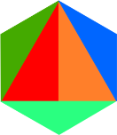
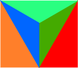
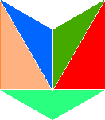
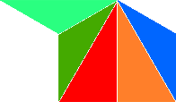
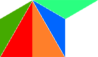

Presentación
El taller "Euclides y Hilbert" es un evento académico dedicado a estudiantes de la segunda mitad de
la licenciatura en matemáticas o de licenciaturas afines, interesados en interacciones entre geometría
euclidiana y matemáticas discretas. Partiremos del tercer problema de la lista de Hilbert y continuaremos
con temas relacionados a éste.
Durante el taller los asistentes no sólo escucharán los cursos y pláticas, sino también deberán poner
en práctica sus conocimientos matemáticos y habilidades para trabajar en equipo.
Expositores
Tendremos 4 pláticas con los siguientes expositores:
 Javier Bracho
Instituto de Matemáticas, UNAM
 Déborah Oliveros
Déborah Oliveros
Instituto de Matemáticas, UNAM-Juriquilla
 Elías Mochán
Instituto de Matemáticas, UNAM
 Eric Pauli
Instituto de Matemáticas, UNAM-Juriquilla
Los investigadores
 Daniel Pellicer Covarrubias
Centro de Ciencias Matemáticas, UNAM-Morelia
 Edgardo Roldán Pensado
Centro de Ciencias Matemáticas, UNAM-Morelia
Que impartirán los siguientes cursos: